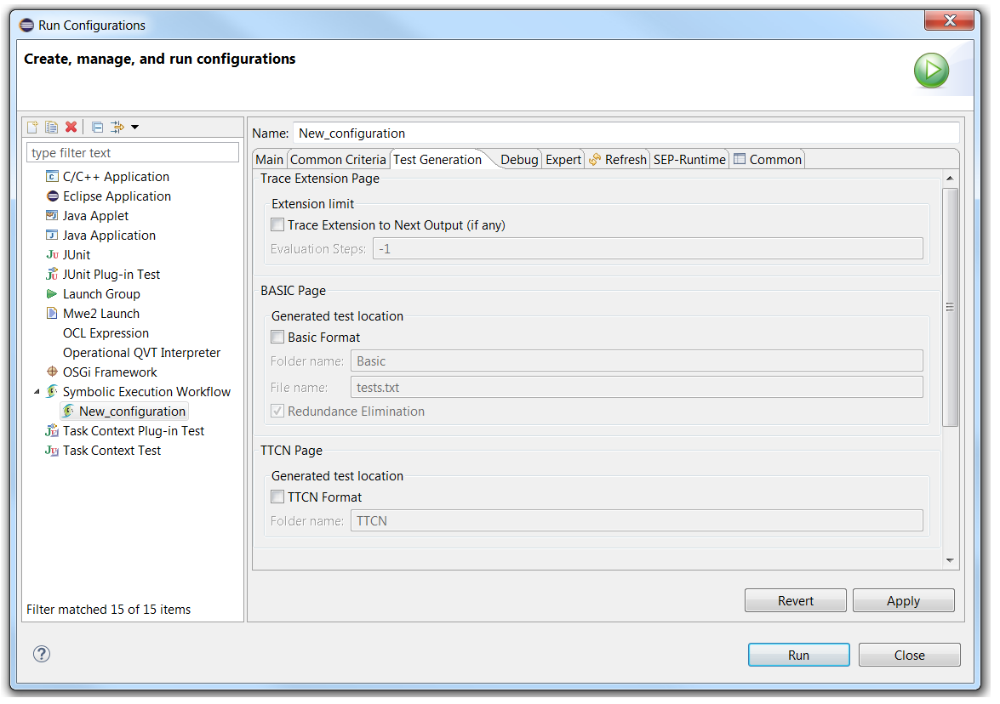
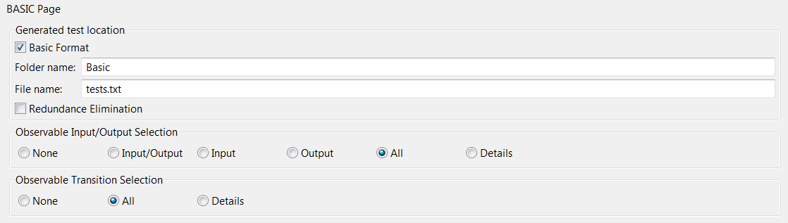
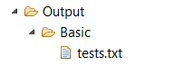
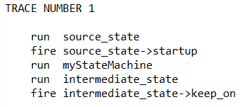
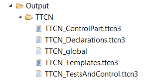

The tab is shown below :
When checking "Trace Extension to Next Output", we can override the "Evaluation Steps" limit defined in the Common Criteria Tab. This allows to extend a given symbolic execution configuration for certain purposes. We can add a fixed number of steps or allow an infinite number of steps by entering "-1".
When checking "Basic Format", additional widgets appear as follows :
When launching a symbolic execution, the following file appear :
For a simple model, the content of the "tests.txt" is as follows :
As we can guess, this file records events as they unfold during the symbolic execution. Those events can be (among others) :
When several branches are explored, the diverse possibilities are recorded under different sections named "TRACE NUMBER X".
We can lighten this report or flesh it out using the following options :
By checking "Redundance Elimination", you allow Diversity to prune some of the "TRACE NUMBER X" sections if several of them have identical contents.
When checking "TTCN Format", the following files are generated :
Those files describe the system and the symbolic execution using the TTCN-3 Format (see TTCN-3)